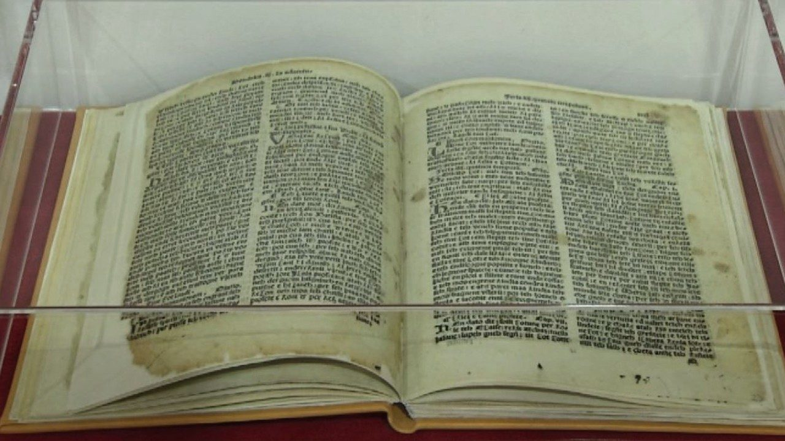
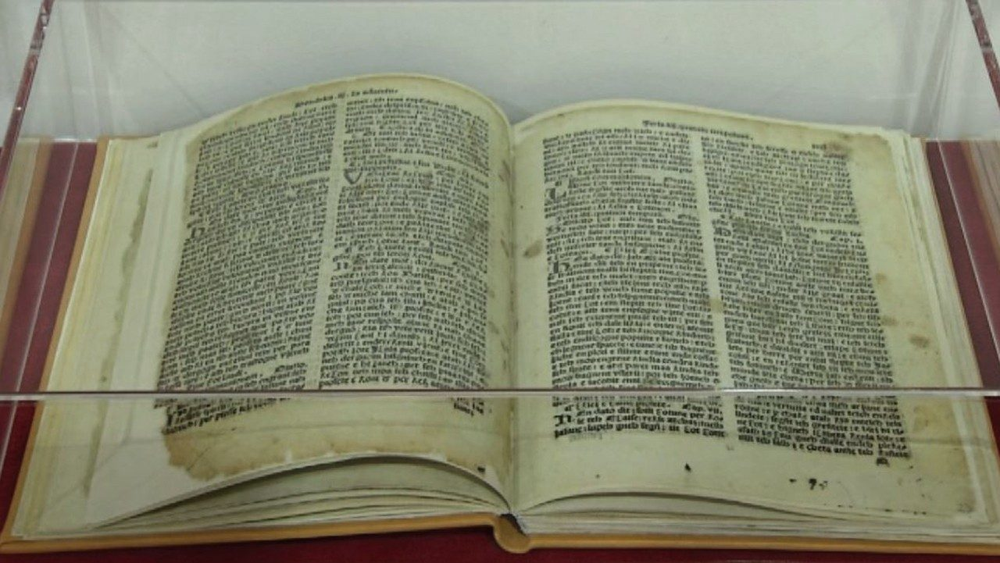
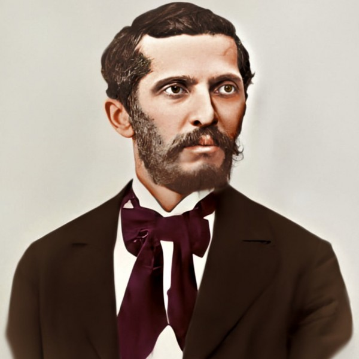
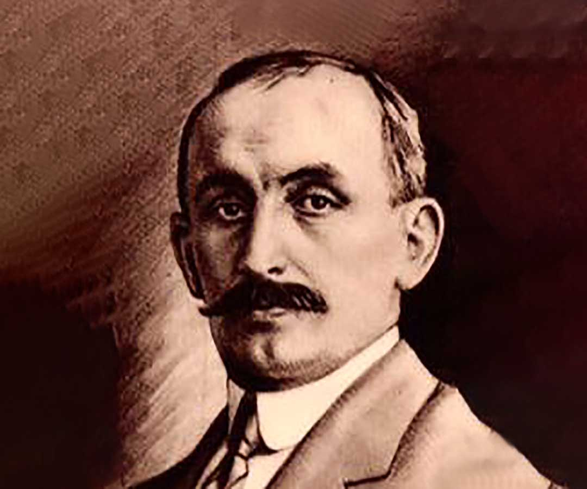
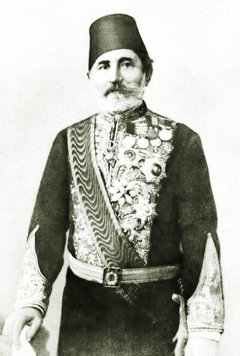
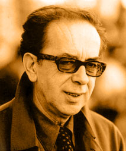
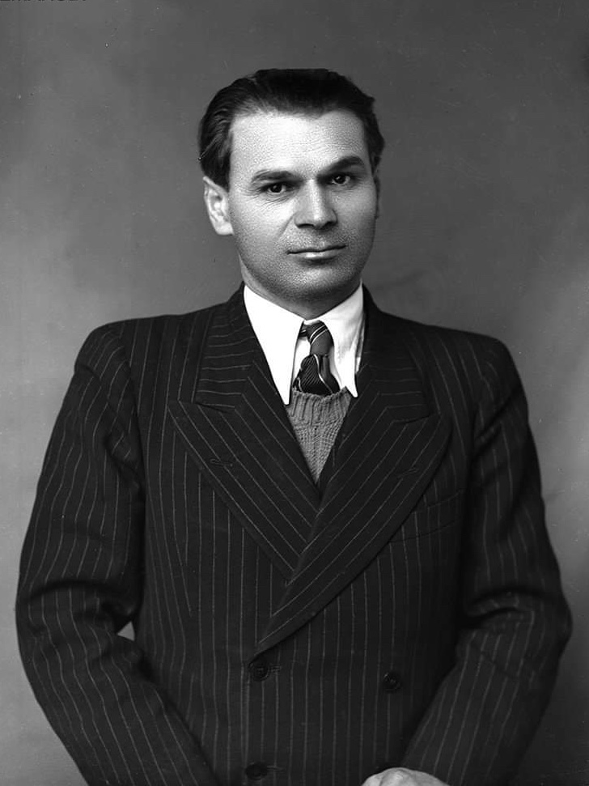

Temat kryesore:
Historiku, zhvillimi i gjuhes shqipe
Vecorite tipologjike te shqipes
Autoret me te shquar shqiptare
Gjuha shqipe-Identiteti yne kombetar
Gjuha shqipe eshte elementi kryesor i identifikimit tone si nje popull pasi pasqyron gjithe traditen,historine dhe kulturen tone.Gjuha jone e vecante ka mundur te mbijetoje gjate shume veshtiresive te vendit si sulmet nga vendet e huaja,pushtimi osman por edhe huazimi i shume fjaleve ne leksikun e gjuhes sone çka na ben te kuptojme qe gjuha jone eshte nje pasuri me vete qe ka ruajtur shprehje me te thella te botekuptimit te ketij kombi.Per kete arsye,gjuhen tone s'duhet ta marrim per te mireqene duke e ndryshkur me fjale te huazuar nga anglishtja por te jemi krenar qe kjo gjuhe me te cilen jemi rritur,eshte nje element antik i paraardhesve tane qe kane mundur te ruajne token qe sot e njohim Shqiperi.Gjuha shqipe ben pjese ne familjen e gjuheve indoevropiane, ku futen gjuhet indo-iranike, greqishtja, gjuhet romane, gjuhet sllave, gjuhet gjermane, etj. Ajo formon nje dege te veçante ne kete familje gjuhesore dhe nuk ka ndonje lidhje prejardhjeje me asnjeren prej gjuheve te sotme indoevropiane. Karakteri indoevropian i shqipes, perkatesia e saj ne familjen gjuhesore indoevropiane, u arrit te percaktohej e te vertetohej qe nga mesi i shekullit XIX, ne saje te studimeve te gjuhesise historike krahasuese.
Historiku, zhvillimi i gjuhës shqipe
Problemi i origjines se gjuhes shqipe eshte nje nga problemet shume te debatuara te shkences gjuhesore. Ajo e ka burimin, pa dyshim, prej njeres nga gjuhet e lashta te Gadishullit te Ballkanit, ilirishtes ose trakishtes. Ne literaturen gjuhesore qarkullojne dy teza themelore per origjinen e shqipes: teza e origjines ilire dhe teza e origjines trake. Teza ilire ka gjetur mbeshtetje me te gjere historike dhe gjuhesore. Ajo eshte formuar qe ne shekullin XVIII ne rrethet e historianeve.Qe nga ajo kohe deri ne ditet tona, nje varg dijetaresh te shquar historiane, arkeologe e gjuhetare, kane sjelle duke plotesuar njeri tjetrin, nje sere argumentesh historike dhe gjuhesore, qe mbeshtesin tezen e origjines dhe te shqiptareve dhe te gjuhes se tyre. Disa nga keto argumente themelore, jane:
1. Shqiptaret banojne sot ne nje pjese te trojeve, ku ne periudhen antike kane banuar fise ilire.
2. Nje pjese e elementeve gjuhesore: emra sendesh, fisesh, emra njerezish, glosa, etj., qe jane njohur si ilire, gjejne shpjegim me ane te gjuhes shqipe.Format e toponimeve te lashta te trojeve ilire shqiptare, te krahasuara me format pergjegjese te sotme, provojne se ato jane zhvilluar sipas rregullave te fonetikes historike te shqipes.
3. Te dhenat arkeologjike dhe ato te kultures materiale e shpirterore, deshmojne se ka vijimesi kulturore nga iliret antike te shqiptaret e sotem. Nga te gjithe keto argumente, te paraqitur ne menyre te permbledhur, rezulton se teza e origjines ilire e gjuhes shqipe, eshte teza me e mbeshtetur nga ana historike dhe gjuhesore.
Fillimet e shkrimit te gjuhes shqipe
Shqipja eshte nje nga gjuhet e lashta te Ballkanit, por e dokumentuar me shkrim mjaft vone, ne shekullin XV.
Dokumenti i pare i shkruar ne gjuhen shqipe, eshte ai qe quhet “Formula e pagezimit”, e vitit 1462. Eshte nje fjali e shkurter ne gjuhen shqipe “Unte paghesont premenit Atit et birit et spertit senit”, qe gjendet ne nje qarkore te shkruar ne latinisht nga Kryepeshkopi i Durresit Pal Engjelli, bashkepunetor i ngushte i Skenderbeut.
Dokumenti i dyte, i shkruar ne gjuhen shqipe eshte Fjalorthi i Arnold von Harfit, i vitit 1496. Udhetari gjerman Arnold von harf, nga fshati i Kelnit, ne vjeshte te vitit 1496, ndermori nje udhetim pelegrinazhi per ne “vendet e shenjta”. Gjate udhetimit kaloi edhe neper vendin tone, gjate bregdetit, duke u ndalur ne Ulqin, Durres e Sazan dhe per nevoja praktike te rruges shenoi 26 fjale, 8 shprehje dhe numeroret 1 deri me 10 dhe 100 e 1000, duke i shoqeruar me perkthimin gjermanisht. Ky Fjalorth u botua per here te pare me 1860 ne Keln, nga E.von Grote.
I fundit te shekullit XV ose i fillimit te shekullit XV eshte edhe nje tekst tjeter i shkruar ne gjuhen shqipe dhe i gjendur brenda nje doreshkrimi grek te shekullit XIV ne Biblioteken Ambrosiana te Milanos. Teksti permban pjese te perkthyera nga Ungjilli i Shen Mateut, etj. Ai eshte shkruar ne dialektin e jugut dhe me alfabet grek. Ky tekst i shqipes i shkruar, njihet ne literaturen shqiptare me emrin “Ungjilli i Pashkeve”. Keto dokumente nuk kane ndonje vlere letrare, por paraqesin interes per historine e gjuhes se shkruar shqipe. Shqipja, qe ne fillimet e shkrimit te saj, deshmohet e shkruar ne te dy dialektet, ne dialektin e veriut (gegerisht) dhe ne alfabetin e jugut (toskerisht), si dhe me dy alfabete, me alfabetin latin dhe me alfabetin grek, gje qe tregon se kultura shqiptare ishte njekohesisht nen ndikimin e kultures latine dhe te kultures greko-bizantine.
Libri i pare i shkruar ne gjuhen shqipe, qe njohim deri me sot, eshte “Meshari” i Gjon Buzukut, i vitit 1555, i cili shenon edhe fillimin e letersise se vjeter shqiptare. Nga ky liber, na ka arritur vetem nje kopje, qe ruhet ne Biblioteken e Vatikanit. “Meshari” i Gjon Buzukut eshte perkthimi ne shqip i pjeseve kryesore te liturgjise katolike, ai permban meshet e te kremteve kryesore te vitit, komente te librit te lutjeve, copa nga Ungjilli dhe pjese te ritualit dhe te katekizmit.Pra, edhe per gjuhen shqipe, ashtu si per shume gjuhe te tjera, periudha letrare e saj nis me perkthime tekstesh fetare.Keto jane deshmi qe e bejne te besueshme ekzistencen e nje tradite me te hershme shkrimi te shqipes.
 

Formimi i gjuhes letrare kombetare te njesuar (gjuha standarde), si varianti me i perpunuar i gjuhes se popullit shqiptar, ka qene nje proces i gjate, qe ka filluar qe ne shekujt XVI-XVIII, por perpunimi i saj hyri ne nje periudhe te re, ne shekullin XIX, gjate Rilindjes Kombetare. Ne vitin 1879, u krijua “Shoqata e te shtypurit shkronja shqip”, qe i dha nje shtyse te re kesaj veprimtarie. U hartuan gramatikat e para me synime normative dhe u be hapi i pare per hartimin e nje fjalori kombetar i gjuhes shqipe, qe eshte “Fjalori i Gjuhes Shqipe” i Kostandin Kristoforidhit, i botuar pas vdekjes se autorit, me 1904. Gjate periudhes se Rilindjes Kombetare, u arrit te pervijoheshin dy variante letrare te kombit shqiptar, varianti letrar jugor dhe varianti letrar verior. U bene gjithashtu, perpjekje per afrimin e ketyre varianteve dhe per njesimin e gjuhes letrare. Detyra e pare qe duhej zgjedhur, ishte njesimi i alfabetit. Deri atehere, shqipja ishte shkruar ne disa alfabete: alfabeti latin, alfabeti grek, alfabeti turko-arab dhe alfabete te veçanta. Kete detyre e zgjidhi Kongresi i Manastirit, qe vendosi te perdorej nje alfabet i ri, i mbeshtetur teresisht ne alfabetin latin, i plotesuar me nente digrame (dh, gj, ll, nj, rr, sh, th, xh, zh), dhe me dy shkronja me shenja diakritike (ç, e), eshte alfabeti qe ka edhe sot ne perdorim gjuha shqipe. Nje hap tjeter per njesimin e gjuhes letrare shqipe, beri “Komisioni letrar shqip”, qe u mblodh ne Shkoder ne vitin 1916. Komisioni nenvizoi si detyre themelore levrimin e gjuhes letrare shqipe dhe zhvillimin e letersise shqiptare. Ky komision gjuhetaresh e shkrimtaresh, krijuar per te ndihmuar ne formimin e nje gjuhe letrare te perbashket permes afrimit te dy varianteve letrare ne perdorim, vleresoi variantin letrar te mesem, si nje ure ne mes toskerishtes dhe gegerishtes dhe percaktoi disa rregulla per drejtshkrimin e tij, te cilat ndikuan ne njesimin e shqipes se shkruar.Pas Luftes se dyte Boterore, puna per njesimin e gjuhes letrare kombetare (gjuhes standarde) dhe te drejtshkrimit te saj, nisi te organizohet nga Instituti i Shkencave. Projekti “Rregullat e drejtshkrimit te shqipes “ i vitit 1967, pas nje diskutimi publik, ai u paraqit per diskutim ne Kongresin e Drejtshkrimit te Shqipes, qe u mblodh ne Tirane, ne vitin 1972, i cili ka hyre ne historine e gjuhes shqipe dhe te kultures shqiptare, si Kongresi i njesimit te gjuhes letrare kombetare.Kongresi i Drejtshkrimit te Shqipes, ne te cilin moren pjese delegate nga te gjitha rrethet e Shqiperise, nga Kosova, nga Maqedonia dhe nga Mali i Zi dhe nga arbereshet e Italise, pasi analizoi te gjithe punen e bere deri atehere per njesimin e gjuhes letrare, miratoi nje rezolute, ne te cilen perveç te tjerash, pohohet se “populli shqiptar ka tashme nje gjuhe letrare te njesuar”.Gjuha letrare kombetare e njesuar (gjuha standarde), mbeshtetej kryesisht ne variantin letrar te jugut, sidomos ne sistemin fonetik por ne te jane integruar edhe elemente te variantit letrar te veriut.
Veçoritë tipologjike të shqipes
Alfabeti i shqipes ka 36 shkronja, nga te cilat 25 jane te thjeshta (a, b, c, d, e, f, g, h, i, j, k, l, m, n, o, p, q, r, s, t, u, v, x, y, z), 9 jane bigrame (dh, gj, ll, nj, rr, sh, th, xh, zh) dhe 2 me shkronja diakritike (e, ç). Shqipja ka theks intensiteti dhe pergjithesisht te palevizshem gjate Ne shumicen e rasteve, sidomos ne sistemin emeror, theksi bie ne rrokjen e parafundit. Shqipja ka nje sistem te zhvilluar (te pasur) formash gramatikore, ka nje sistem lakimi binar: lakimin e shquar dhe te pashquar, ruan ende mire format rasore (ka pese rasa), sistemin prej tri gjinish (mashkullore, femerore dhe asnjanese). Sistemi emeror ka trajte te shquar dhe te pashquar dhe per pasoje, edhe lakim te shquar e te pashquar; ka nyje te perparme te emrat ne rasen gjinore (i, e malit) dhe te mbiemrat e nyjshem (i mire, i vogel, etj)., te emrat asnjanes te tipit te folurit, etj. Perveç lakimit te emrave kemi edhe zgjedhimin e foljeve (dash – desh, marr – merr); ka dy lloje mbiemrash qe mund te jene te nyjshem (i madh, i ndershem) dhe te panyjshem (trim, besnik). Te numeroret perdor kryesisht sistemin decimal (dhjete, tridhjete, pesedhjete), por ruan edhe sistemin vigezimal (njezet, dyzet); numeroret e perbere nga 11-19, formohen duke vene numrin e njesheve perpara, parafjalen mbe dhe pastaj dhjeteshet (njembedhjete, dymbedhjete, etj). Sistemi foljor paraqitet mjaft i larmishem. Shqipja ka nje sistem te pasur formash menyrore dhe kohore, nje pjese te e cilave jane te trasheguara nga nje periudhe e hershme, nje pjese jane kryer gjate evolucionit te saj historik. Folja ka gjashte menyra; (deftore, lidhore, kushtore, habitore, deshirore, urdherore) dhe tri forma te pashtjelluara (pjesore, paskajore dhe percjellore). Koha e ardhshme ndertohet ne menyre analitike, me dy forma: me do (forma e foljes dua) + lidhore (do te punoj) dhe me foljen ndihmese kam + paskajore (kam per te punuar). Rendi i fjaleve ne fjali eshte pergjithesisht i lire, por me i zakonshem eshte rendi kryefjale-kallezues-kundrinore. Leksiku i gjuhes shqipe perbehet prej disa shtresash. Nje shtrese te veçante perbejne fjalet me burim vendas, te trasheguar nga nje periudhe e lashte indoevropiane (dite, nate, dimer, moter, jani, etj.), ose te formuara me vone, me mjete te shqipes (ditor, dimeror, i pernatshem). Nje shtrese tjeter, perbejne fjalet e huazuara nga gjuhe te tjera, si pasoje e kontakteve te popullit shqiptar me popuj te tjere gjate shekujve. Fjalet e huazuara kane hyre nga greqishtja, greqishtja e vjeter dh e re, nga latinishtja dhe gjuhet romane, nga sllavishtja dhe nga turqishtja. Shqipja, me gjithe huazimet e shumta, ka ruajtur origjinalitetin e saj, si gjuhe e veçante indoevropiane.
Dialektet e gjuhes shqipe
Gjuha shqipe ka dy dialekte kryesore, dialektin e veriut ose gegerishten dhe dialektin e jugut ose toskerishten. Kufiri natyror qe i ndan ne vija te pergjithshme keto dialekte, eshte lumi i Shkumbinit, qe kalon neper Elbasan, ne Shqiperine e mesme. Ne anen e djathte te Shkumbinit shtrihet dialekti verior (gegerishtja), ne anen e majte te tij, dialekti jugor (toskerishtja). Dallimet midis dialekteve te shqipes nuk jane te medha, folesit e tyre kuptohen pa veshtiresi njeri me tjetrin. Megjithate, ekzistojne disa dallime ne sistemin fonetik dhe ne strukturen gramatikore e ne leksik, nga te cilet me kryesoret jane: dialekti i veriut ka zanore gojore dhe hundore, kurse dialekti i i jugut, vetem zanore gojore; togut ua te toskerishtes, gegerishtja i pergjigjet me togun ue (grua – grue); togut nistor va te toskerishtes, gegerishtja i pergjigjet me vo (vater – voter); â-se hundore te theksuar te gegerishtes, toskerishtja i pergjigjet me e te theksuar (nâne – nene). Dialekti i jugut ka dukurine e retacizmit (kthimin e n-se nderzanore ne r (rane – rere), qe ne gegerisht mungon; ne toskerisht, grupet e bashketingelloreve mb, nd, etj. Ruhen te plota, kurse ne gegerisht, jane asimiluar ne m, n, (mbush – mush, vend – ven). Ne sistemin morfologjik, dialekti i veriut ka formen e paskajores se tipit me punue, kurse toskerishtja ne vend te saj, perdor lidhoren te punoj. Forma e pjesores ne toskerisht, del me mbarese, kurse ne gegerisht, pa mbarese (kapur – kape), etj. Dialekti i jugut ka format e se ardhmes: do te punoj dhe kam per te punuar , ndersa dialekti i veriut perveç formave te mesiperme ka formen kam me punue.
Autorët më të shquar shqiptarë
- Naim Frasheri – Naim Frasheri eshte nje nga poetet dhe shkrimtaret me te njohur te periudhes se Rilindjes. Vepra e tij ka pasur nje ndikim te madh ne zhvillimin e letersise shqipe dhe ne krijimin e nje ndjenje te forte kombetare. Poema e tij me e njohur eshte "Bageti e bujqesi", nje veprimtari letrare qe promovon dashurine per atdhene dhe perpjekjet per te shpetuar kombin shqiptar nga dominimi osman. Ai eshte i njohur gjithashtu per poezite dhe perkthimet e tij qe kane nxitur frymen e Rilindjes. 
- Andon Zako Çajupi – Andon Zako Çajupi eshte nje poet dhe dramaturg shqiptar, i njohur per veprat e tij qe pasqyrojne problemet sociale dhe kombetare te shqiptareve ne periudhen e Rilindjes. Vepra e tij me e njohur eshte "Pervjetori i Rilindjes Kombetare", nje poezi qe e lavderon levizjen kombetare dhe i jep kuptim atdhedashurise. Çajupi ishte gjithashtu nje figure e rendesishme e teatrit shqiptar. 
- Pashko Vasa – Pashko Vasa ishte nje shkrimtar, poet dhe patriot shqiptar i periudhes se Rilindjes, i njohur per veprat e tij qe i dhane nje dimension te ri dashurise per atdhene dhe perpjekjeve per pavaresine e Shqiperise. Poema e tij me e njohur eshte "O moj Shqiperi", e cila shperfaq pasionin dhe krenarine per atdhene dhe ndjenjen e deshires per liri dhe pavaresi. 
- Ismail Kadare - Ismail Kadare eshte nje nga shkrimtaret me te njohur dhe me te medhenj te letersise shqiptare. Vepra e tij me e njohur eshte "Keshtjella", nje roman qe trajton ngjarjet e periudhes mesjetare dhe pershkruan betejen e shqiptareve kunder pushtuesve osmane, si dhe perpjekjet e tyre per te mbrojtur identitetin kombetar. Kadare eshte nderuar me shume çmime nderkombetare dhe konsiderohet si nje nga shkrimtaret me te medhenj te shekullit XX. 
- Lasgush Poradeci - Lasgush Poradeci eshte nje poet i njohur shqiptar, i cili eshte i njohur per poezi te thella, me nje ndjenje te thelle lirizmi. Vepra e tij me e rendesishme eshte "Rreth diellit", nje koleksion poezish qe i japin nje dimension te ri letersise shqiptare dhe trajtojne tema si natyra, dashuria dhe ekzistenca. 